ログインしました。
この章では「プログラミングを行うための前知識」を学習し、「プログラムを書く」、「プログラムを実行する」ことが出来るようになりましょう。
これから実際にソースコードを書きながらプログラミングを学んでいきましょう。
最初に学ぶプログラミング言語はRuby(ルビー)と呼ばれる言語です。
Rubyはプログラミング言語の1つです。気軽に楽しくプログラミングできて、しかも実用的です。大きなWebアプリケーションから小さなプログラムまで、さまざまなソフトウェアを作ることができます。
Rubyの特徴としては、以下が挙げられます。
数あるプログラミング言語の中でもRubyを勉強する理由は何でしょうか。
それは、Rubyは非常にシンプルで書きやすい言語であるため最初に学習するプログラミング言語として適しているからです。
画面に"はじめてのプログラム"と表示するプログラムをJavaと呼ばれる他のプログラミング言語とRubyで書いたもので比較してみます。
(今はまだソースコードの意味が理解できていなくてもかまいません。)
例：Java
1 2 3 4 5 |
public class HelloWorld {
public static void main(String[] args) {
System.out.println("はじめてのプログラム");
}
}
|
例：Ruby
1 |
puts "はじめてのプログラム"
|
見てわかるようにRubyの方が少ないコードで同じことができ、
さらに非常にシンプルな文法な記述で済んでいます。
Rubyは現在多くの有名サイトで使用されています。
以下にRubyが使用されているサイトの例を示します。
言わずと知れた世界的な情報サービス。
140文字以内の「ツイート」と称される短文を投稿し、他人と比較的軽いコミュニケーションをとることができます。
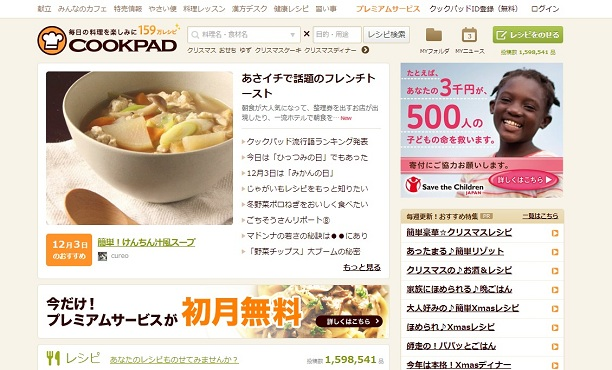
日本最大の料理レシピサイト。
投稿レシピの数は150万品を超えており、このサイトを見ればほとんどの料理の作り方が分かります。
20～30代の主婦を中心に多くの人々に利用されています。
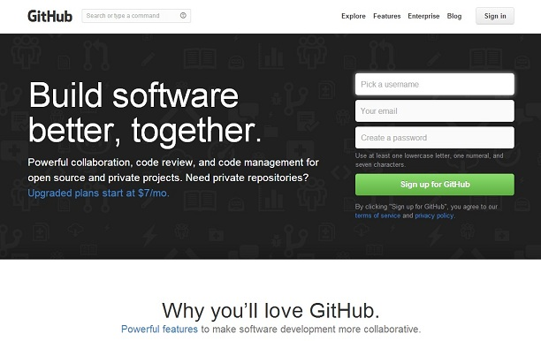
開発者向けのホスティングサービス。
プロジェクトやソースコードを世界中の人と共有できます。
Tech::Campでも使用します。
ここで説明した以外でも多くのウェブサイトでRubyが使用されています。
Rubyを使えばこのような大規模サイトを作成することも可能になります。
Rubyを学習する理由の１つにRuby on Railsを使うためという理由があります。
RubyのWebアプリケーションフレームワークの１つです。最も有名で、利用者も多いものです。
Webアプリケーションフレームワークとは、Webアプリケーションを簡単に作れるようにする骨組みのことです。
フレームワークを使用することで、開発者はより少ない労力で開発を行うことが可能となります。
フレームワーク自体はプログラミング言語ではありません。ある特定の用途に特化した機能を選定し集め、簡単に扱えるようにしたものです。
Tech::Campでも、後半にRuby on Railsを使ったWebアプリケーション開発を行ないます
では、Rubyについての説明を終えたところで本格的なプログラミング学習に入っていきましょう。
この章では自分でRubyのプログラムを「書いて」、「実行できる」ようになることが目標です。
以下の項目について学習していきます。
まず、プログラミングを学習する前準備としてターミナルの操作を学習しましょう。ターミナルは「Rubyの実行」や「サーバーの起動」などに必要です。ここで基本的な操作を覚えてしまいましょう。
先ほどから出てくるターミナルとは何でしょうか。こちらは、PCに命令をするリモコンのようなものです。
プログラムを記述したファイルを読み込み、プログラムとして実行するにはコマンドラインというツールが必要となります。Macにデフォルトでインストールされているコマンドラインがターミナルです。
コマンドライン(またはコマンドラインインターフェース:CLI)とは、コンピュータに対してキーボードからコマンドという文字を打ち込んで操作を行う方法です。
コマンドラインとは対照的に、グラフィックを用いて操作を行う方法をグラフィカルユーザーインターフェース(GUI)といいます。
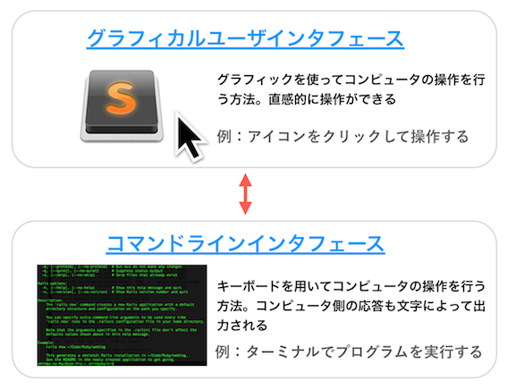
ソースコードをファイルに記述するだけでは、プログラムは動きません。コマンドラインでプログラムを実行する必要があります。
ターミナルはMacに初めからインストールされているアプリケーションなので、スポットライト検索から簡単に起動することができます。
controlキー + spaceキーを押すと、スポットライト検索のバーを出すことができます。その後、「ターミナル」と入力し、検索結果として出たターミナルのアプリケーションをダブルクリックして起動しましょう。
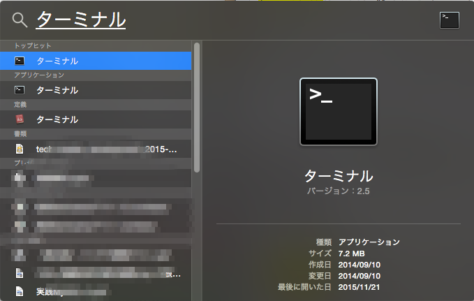
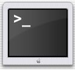
ターミナルが開けたでしょうか。まずは表示されている画面をみてみましょう。
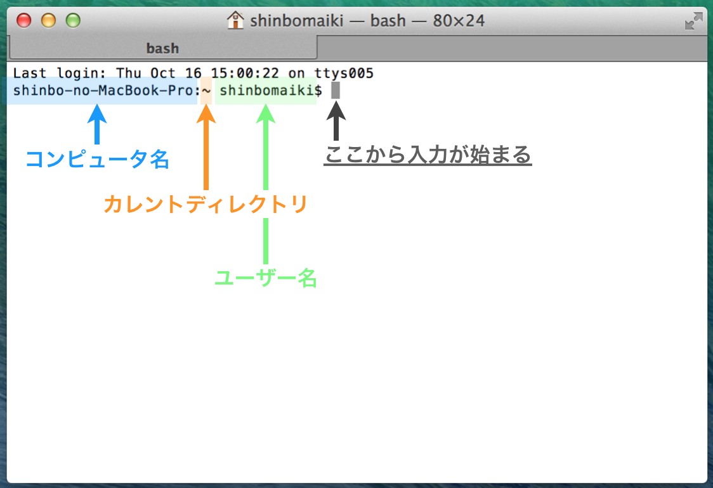
コンピュータ名は自分のコンピュータの名前ですね。ここでは「shinbo-no-Macbook-Pro」となっています。
ユーザー名は自分の名前です。ここでは「shinbomaiki」となっています。このあとに続く「$」はプロンプトといい、コンピュータが命令を受け付けられる状態であることを示します。つまり今は、命令待ちの状態です。
「〜」となっているカレントディレクトリについては次に説明します。
ディレクトリとはコンピュータ上で複数のファイルを整理するためのファイルの入れ物のことです。簡単に言ってしまえば、フォルダのことを指します。PCの実体はディレクトリによる階層構造になっており、ディレクトリの中にさらに多くのディレクトリやファイルが保存されています。
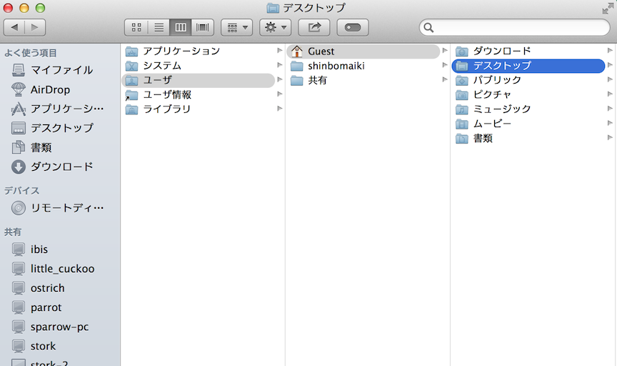
本カリキュラムでは、ディレクトリの階層を以下のような図で表していきます。
いくつかの特別なディレクトリを指し表す言葉があります。特別な呼び方をするディレクトリとして、「ルートディレクトリ」、「カレントディレクトリ」、「ホームディレクトリ」があります。
ディレクトリは階層構造になっているので、あるディレクトリは他のディレクトリに属しています。その階層構造の一番上にあるディレクトリがルートディレクトリです。
以下の図では一番上の階層にあるのは「root」という名前のディレクトリです。 よって「root」がルートディレクトリとなります。
ここでは例として「root」というフォルダを一番上の階層に置いているだけです。ルートディレクトリが決まって「root」という名前なわけではありません。
カレントディレクトリとはターミナルで現在作業中となるディレクトリのことを指します。ここを基準に、PCに命令を出していきます。
カレントディレクトリは先ほどターミナルで出てきました。ターミナルはディレクトリを移動して操作を行います。
ホームディレクトリは新規にターミナルを立ち上げた場合に作業中となるディレクトリです。〜で表されます。Macでのデフォルトのホームディレクトリは/Users/ユーザ名となります。
これらをふまえて先ほどのターミナル画面をもう一度見てみましょう。
この画面上ではカレントディレクトリは「〜」になっているので
現在、作業中のディレクトリ(カレントディレクトリ)はホームディレクトリということになります。
ターミナルからのPC操作には、linuxコマンドと呼ばれる一連の命令群を用います。
ターミナルではlinuxコマンドの入力でPCに様々な命令を与えます。linux(リナックス)とはPCの種類のようなもので、ここでは深く考える必要はありません。
よく使うコマンドとしてlsコマンドとcdコマンドがあります。
今後、ターミナルでlinuxコマンドを入力するときは以下のような形式で指示します。
1 |
$ 入力するlinuxコマンド
|
$は前にも出てきたプロンプトという命令待ちを表す記号なので入力する必要はないです。
また、以下のように#に続けて書いてあるのは説明であり、linuxコマンドではありません。実際に入力する必要はありません。
1 2 |
$ 入力するlinuxコマンド
# ここにあるのは説明です
|
では、linuxコマンドを学習していきましょう。まずはlsコマンドです。
lsコマンドはlistの略で、フォルダやファイルの一覧を表示するコマンドです。カレントディレクトリの直下にあるファイルやフォルダの名前が一覧で表示されます。
使い方はターミナルで「ls」と打ち込んでエンターを押すだけです。
1 2 |
$ ls
# 今いるディレクトリの直下にあるファイルやフォルダの名前の一覧を表示します
|
例えば、以下のようなディレクトリ構造があるとします。
カレントディレクトリ、つまり現在作業中のディレクトリはtech-campです。ここでlsコマンドを打ち込んでみると以下のような出力になります。
1 2 3 |
$ ls
ruby html
rails index.html
|
tech-campの直下にあるファイルやフォルダの「ruby, html, rails, index.html」の名前が出力されています。直下ではない「ruby.html」の名前がないことに注意してください。
ターミナルでlsコマンドを打ち込んでみよう
続いて、ディレクトリの移動を行うcdコマンドについて学習しましょう。
cdコマンドはchange directoryの略で、カレントディレクトリを移動するときに使います。
使い方はターミナルで「cd (移動したいディレクトリのパス)」と打ち込んでエンターを押します。単に「cd」とするとホームディレクトリに移動します。
1 2 |
$ cd
# ホームディレクトリに移動します
|
1 2 |
$ cd Desktop
# Desktopという名前のディレクトリに移動します
|
例えば、以下のようなディレクトリ構造があるとします。
カレントディレクトリ、つまり現在作業中のディレクトリはtech-campです。ここでcdコマンドを使ってrubyディレクトリへ移動してみます
1 |
$ cd ruby
|
すると、カレントディレクトリはrubyに移動します。
ディレクトリを移動できたかどうかは、ターミナルの**カレントディレクトリの部分を見て判断しましょう。
1 2 |
shinbo-no-MacBook-Pro:〜 shinbomaiki$
# カレントディレクトリはホームディレクトリ
|
1 2 |
shinbo-no-MacBook-Pro:Desktop shinbomaiki$
# カレントディレクトリはDesktop
|
「cd Desktop」と打ち込んでDesktopに移動してみよう。さらに移動できたら「cd」でホームディレクトリに戻ろう
パスとはファイルやフォルダの所在を示す文字列のことです。
フォルダは階層ごとに/(スラッシュ)で区切ります。
パスの指定方法は絶対パスと相対パスの2つあります。
絶対パスはルートディレクトリから指定するパスです。絶対パスで指定するときにはパスの一番最初に/を指定します。
1 2 |
$ cd /Users/Desktop
# 絶対パスは/から始めます
|
相対パスは現在いるディレクトリ(カレントディレクトリ)から指定するパスです。相対パスで指定するときにはパスの一番最初に/を書きません。
1 2 |
$ cd Users/Desktop
# 相対パスは始めに/をつけません
|
では「絶対パス」と「相対パス」を使ってディレクトリを移動してみます。Macのディレクトリ構造は簡単に示すと以下のようになっています。(実際にはここには書いていないディレクトリがいくつもあります)
まずは、絶対パスをつかってルートディレクトリに移動してみましょう。
cd /とターミナルで打ち込んでルートディレクトリに移動しましょう
絶対パスはルートディレクトリからパスを指定します。この場合、ルートディレクトリに移動するだけなので単に/とするだけです。
1 2 |
$ cd /
# ルートディレクトリに移動する
|
cdと/の間に半角スペースがあることに注意してください。
ターミナルでカレントディレクトリの表示が/となったでしょうか。
これでカレントディレクトリがルートディレクトリの「Macintosh HD」になりました。
ここで今いるディレクトリ(ルートディレクトリ)の直下にどのようなファイルとフォルダがあるか見てみましょう。
lsとターミナルで打ち込んでルートディレクトリの直下のファイルとフォルダの名前一覧を表示させましょう
lsコマンドで表示させた名前の一覧の中に「Users」という名前があったでしょうか。次はこのUsersディレクトリに移動します。ここも絶対パスで指定しましょう。
「Users」ディレクトリはルートディレクトリの直下にあります。なので絶対パスでは、/に続けてUsersと指定するだけです。
1 |
$ cd /Users
|
cd /Usersとターミナルで打ち込んでUsersディレクトリに移動しましょう
ターミナルでカレントディレクトリの表示がUsersとなったでしょうか。
これでカレントディレクトリがUsersディレクトリになりました。
ではここから一気に「Desktop」まで移動させます。絶対パスで指定する場合は、/Users/ユーザー名/Desktopとなります。
1 |
$ cd /Users/ユーザー名/Desktop
|
しかし、相対パスなら今いる「Users」からのパスになるので、ユーザー名/Desktopだけで指定できます。相対パスでは先頭に「/」がつかないことに注目してください。
1 |
$ cd ユーザー名/Desktop
|
ユーザー名は自分のMacのユーザー名となります。わからなければ、lsコマンドで確認しましょう。
cd ユーザー名/Desktopとターミナルで打ち込んでDesktopディレクトリに移動しましょう
どうでしょうか。相対パスを使うとカレントディレクトリからの指定になるため絶対パスよりパスを省略できることがあります。ただし、カレントディレクトリより上のディレクトリに移動したい場合は絶対パスでなければいけません。
1 2 3 4 |
shinbo-no-MacBook-Pro:Desktop shinbomaiki$ cd /Users
# カレントディレクトリはDesktopディレクトリで
# Usersディレクトリへ移動したいときは
# 絶対パスで指定しなければいけない
|
本カリキュラムでは相対パスを使うことを推奨します。入力が楽なためです。
これでソースコードを書く前の前知識は学びました。このあとは実際にRubyのプログラムを書いて実行していきます。
ではいよいよRubyを書いてプログラムを実行してみましょう。
まずは画面上に文字を表示するという簡単なプログラムを書いて、Rubyのプログラムの作り方やプログラムの実行方法を学んでいきます。
プログラミングを学ぶときにまず最初に作成するプログラムとして有名なものが
Hello Worldと表示するプログラムです。
1 2 |
$ ruby helloworld.rb # Rubyプログラムの実行(あとで学習)
Hello World # Hello Worldと出力
|
このように画面上にHello Worldを表示できることが目標です。
という流れでプログラムを実装していきましょう。
まず、Rubyのプログラムを記述するファイルを作る必要があります。
Rubyを書くファイルの名前は何でも良いですが、helloworld.rbのようにファイル名の最後にrbという拡張子をつけるという決まりがあります。
ファイル名の末尾につけられたファイルの種類を識別するための文字のことです。
ファイル名と拡張子は.(ドット)で区切られます。
今回のRubyプログラムはHello Worldを表示するものなのでファイル名はhelloworld.rbとします。
まず、プログラムを記述するためのテキストエディタSublime Textを開きましょう。
テキストエディタは文字情報のみのファイルを作成、編集、保存するために使わるソフトウェアです。プログラムの記述をするときにも、テキストエディタを使います。
アプリケーションの一覧から「Sublime Text」を開きましょう
Sublime Textを開けたら以下のような画面になったと思います。
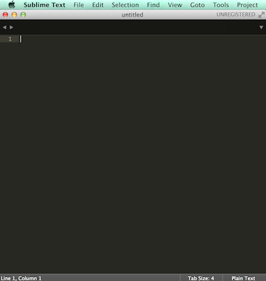
いま、新規のファイルに文字を書き込むことができる状態です。この新規のファイルをhelloworld.rbという名前で「デスクトップ」に保存しましょう。
キーボードで「command + s」を押すと保存名と保存先を決めるための画面がでてきます。
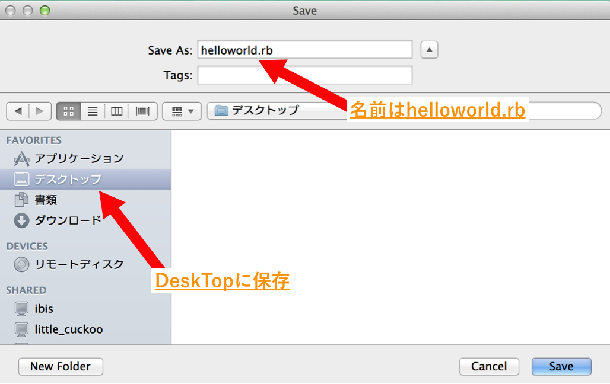
デスクトップにhelloworld.rbという名前のRubyファイルを作成しましょう
作成できたら、Sublime Textは一旦閉じてしまいましょう。
ではこれから先ほど作成したhelloworld.rbファイルにプログラムを書いていきます。
作成したhelloworld.rbをSublime Textで開きましょう。
デスクトップのhelloworld.rbを右クリックして「このアプリケーションで開く」>「Sublime Text」でhelloworld.rbを開いてみましょう
Macでの右クリックとは、トラックパッドを2本指でクリックすることです
開いたhelloworld.rbにRubyプログラムを書いてみます。まずはこちらで指定したソースコードをそのまま書いてください。
以下のソースコードをhelloworld.rbに記述してください
1 |
puts "Hello World"
|
これで画面上にHello Worldと表示するプログラムが書けました。
ではソースコードの内容を見てみましょう。
puts "Hello World"の"Hello World"は画面上に表示させる文字列です。
文字列はRubyのオブジェクトの1つで文字を扱うために使用します。
Rubyで扱える全てのデータは、「オブジェクト」と呼ばれます。
現実世界の数、文字、色、時間などはRubyで扱う場合にはオブジェクトという形で
データ化され、扱うことが可能となります。
以下にRubyの代表的なオブジェクトを示します。もちろんこれら以外にもたくさんのオブジェクトがあります。
| オブジェクト名 | 扱うもの |
|---|---|
| 文字列オブジェクト | 文字 |
| 数値オブジェクト | 数 |
| 時刻オブジェクト | 時間 |
| 日付オブジェクト | 日付 |
| 配列オブジェクト | 複数のデータ |
文字列とはプログラミングの中で文字を扱うためのオブジェクトのことを指します。
文字列は文字を"(ダブルクォテーション)、または'(シングルクォテーション)で囲むことで定義します。
1 2 |
"文字列のサンプル"
'文字列のサンプル'
|
上の２つの文字列のサンプルはどちらも同じ文字列になります。
puts "Hello World"のputsはオブジェクトを表示するためのメソッドです。
メソッドとはプログラミングにおける何らかの処理をする命令群のことです。
例えば、「ターミナルにオブジェクトを出力する」という処理を実行するメソッドがputsになります。
メソッド名をプログラム中に記述することで、そのメソッドの処理を行うことができます。
putsというメソッドに対して文字列などのオブジェクトを右に記述すると、そのオブジェクトが文字としてターミナル上に出力されます。
今回はputsのあとに"Hello World"という文字列を指定しているので画面上にHello Worldと表示されるはずです。
以上をふまえて先ほど書いたソースコードを見てみると、もう意味がわかりますね。
1 |
puts "Hello World"
|
このソースコードは"Hello World"という文字列をputsメソッドを使ってターミナル上に表示させる、というプログラムになります。
では、さきほど書いたプログラムが予想通りの結果となるか実行してみましょう。
ここでの目的は、「Hello World」とターミナル上に表示されることです。
1 2 |
$ ruby helloworld.rb # Rubyプログラムの実行
Hello World # Hello Worldと出力
|
Rubyの実行はターミナルで行います。ターミナルを開きましょう
この時、commandキー + tabキーを押すと、開いているアプリケーションを切り替えることができます。様々なアプリケーションを開きつつ作業をするエンジニアにとってはとても便利なコマンドなので、積極的に利用するようにしましょう。
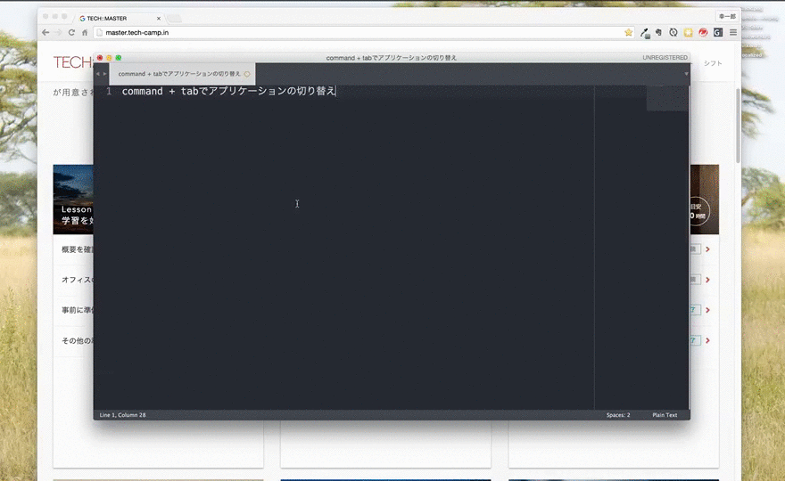
commandキーを押しつつtabキーを連打すると、上記の動画のように右のアプリケーションを選択していくことができます。
helloworld.rbはデスクトップにあるので、cdコマンドを使ってデスクトップへ移動しましょう。まず、カレントディレクトリでlsコマンドを打ち込みます。
カレントディレクトリでlsコマンドを打ち込みましょう。
lsコマンドを打ち込むとターミナル上にデスクトップ、またはDeskTopと表示されていると思います。これはカレントディレクトリの直下にデスクトップのディレクトリがあるということです。
cdコマンドでデスクトップにカレントディレクトリを移動しましょう。
デスクトップがカレントディレクトリになったでしょうか。では、その状態でlsコマンドを打ち込みましょう。
カレントディレクトリでlsコマンドを打ち込みましょう。
helloworld.rbがあったでしょうか。デスクトップに保存していれば、あるはずです。
Rubyプログラムを実行します。Rubyプログラムの実行はターミナルでrubyコマンドを打ち込みます。
rubyコマンドはRubyに関する様々な操作をターミナルで行うために必要なコマンドです。Rubyファイルをプログラムとして実行するためには以下のようにターミナルに打ち込みます。
1 |
$ ruby [実行したいRubyファイルのパス]
|
今回、実行したいファイルはhelloworld.rbですね。カレントディレクトリはDesktopなので、helloworld.rbファイルは直下にあります。そのため、相対パスならばhelloworld.rbと指定するだけです。
1 |
$ ruby helloworld.rb
|
rubyコマンドを使って、helloworld.rbファイルに記述したプログラムを実行しましょう。
ちゃんとターミナル上にHello Worldと表示されたでしょうか？
もし何も表示されない場合はSublimeTextで保存ができていないことが考えられます。
保存ができているかどうかを確かめる方法があります。
次のようにファイル名の横がマルになっていると保存ができていない印です。
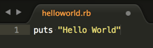
「command + s」で保存をした後はバツになっていると思います。
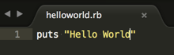
これで保存ができているという印になります。今後カリキュラムを進めていく上でも知っていると非常に便利ですのでぜひ覚えておいて下さい。
以上ではじめてのプログラムは書けました。
今後もこのようにRubyを実行していくので、忘れないようにしましょう。
これからたくさんのソースコードを書いていくことになりますが、いくつか注意することがあるのでここで押さえておきましょう。
プログラム中にはコメントと呼ばれるメモのようなものを書くことができます。
コメントはプログラムの実行時に無視されるので何を書いても問題ありません。
コメントを書いておくとどこで何をしているのかが明確になるため、ソースコードが読みやすくなります。
ソースコード中の文字をコメントにすることをコメントアウトといいます。
コメントアウトするにはコメントにしたい文字の先頭に#(シャープ)を記述します。
1 2 3 |
# コメントアウト
puts "Hello World" # これは実行される
# puts "Hello World" これは実行されない
|
2つめに記述された「puts "Hello World"」はその前に#が記述されているのでコメントアウトされ、実行されません。
helloworld.rbに以下のようにコメントを書いて実行してみましょう。
1 2 3 |
# これはHello Worldと表示するプログラムです
puts "Hello World"
# puts "Hello Ruby"
|
プログラミングにエラーはつきものです。その中でも、はじめのうちは特に起こしやすいエラーを紹介します。以下に挙げるエラーに気をつければ、効率良く学習をすることができます。
・全角スペース
・スペル間違い
・閉じタグがない
全角スペースがプログラム中に混入すると実行時にエラーとなります。
はじめのうちは見つけづらく、頻繁に起こるエラーなので、全角スペースには気をつけましょう。
全角スペース同様、日本語がプログラム中に混入すると実行時にエラーとなります。
ただし全角スペース、日本語ともに文字列では使えます。
1 2 |
puts " "
puts "こんにちは ルビー"
|
上記のプログラムでは全角スペースと日本語がありますが、どちらも文字列なのでエラーを起こさずに実行できます。
全角スペースでのエラー
1 |
puts "Hello World"
|
分かりづらいのですがputsと"Hello World"の間が全角スペースになっています。このプログラムを実行するとエラーしてしまいます。
上の「error1.rb」のサンプルをhelloworld.rbにコピー&ペーストして実行してみよう。エラーするので、どんなエラー文が表示されるのか見てみよう。
打ち間違いのエラー
1 |
put "Hello World"
|
これは「puts」でなく「put」とsが抜けてしまっていますね。こうしたメソッドなどの名前を打ち間違えてしまいエラーとなることはよくあります
上の「error2.rb」のサンプルをhelloworld.rbにコピー&ペーストして実行してみましょう。エラーとなるので、どんなエラー文が表示されるのか見てみましょう。
プログラミングにおける文法の中には、決まった書き方で終わらせないといけないものがあります。もっと後の章で学習しますが、Rubyではif文という条件分岐に関する文法があります。
1 2 3 |
if (3 > 1) then
puts "3は1よりも大きい"
end
|
ここでputs "3は1よりも大きい"は「if」と「end」で囲まれています。このendを忘れるとエラーとなってしまいます。 さらにHTMLでも同様に、閉じタグの概念が出てきます。HTML・CSSを学習する際に改めて意識しましょう。
ここまで、「全角スペース」「スペル間違い」「閉じタグ忘れ」という3つのよくあるエラーの原因に関して学びました。はじめのうちは必ずこれらでエラーを起こすので、真っ先にチェックするようにしましょう。
お疲れ様でした！このカリキュラムの終わりに確認問題を解きましょう。
 大宅 誠人
大宅 誠人